미세플라스틱이 우리에게
오는 과정
오는 과정

1차 미세플라스틱
제조 당시 만들어진 플라스틱
치약, 세안제, 바디워시 등 생활용품 속에
들어있는 플라스틱 알갱이
제조 당시 만들어진 플라스틱
치약, 세안제, 바디워시 등 생활용품 속에
들어있는 플라스틱 알갱이
2차 미세플라스틱
플라스틱 제품이 사용되는 과정이나
버려진 이후에 인위적인 행위나 자연 풍화에
의해 조각나고 미세화 된 플라스틱 파편
플라스틱 제품이 사용되는 과정이나
버려진 이후에 인위적인 행위나 자연 풍화에
의해 조각나고 미세화 된 플라스틱 파편
미세플라스틱
나노
플라스틱
플라스틱
미세플라스틱이란?
지름 5mm 이하의 플라스틱 알갱이로
머리카락 두께와 비슷하거나 더 작은
수준
지름 5mm 이하의 플라스틱 알갱이로
머리카락 두께와 비슷하거나 더 작은
수준
합성섬유 의류
타이어 마모
산업적 사용
플라스틱 제품의 물리적 분해
미세플라스틱
발생원인
발생원인
폐기된 플라스틱 제품이 햇빛, 바람, 파도 등 외부 요인에 의해 점점 작은
조각으로
부서지면서 미세플라스틱 생성됨
부서지면서 미세플라스틱 생성됨
폴리에스터, 나일론, 아크릴 등으로
만들어진 의류가 세탁시 미세섬유 형태로
떨어져 나옴. 이 섬유는 하수 처리 과정을
거쳐도 완전히 제거되지 않아 물속 유입
만들어진 의류가 세탁시 미세섬유 형태로
떨어져 나옴. 이 섬유는 하수 처리 과정을
거쳐도 완전히 제거되지 않아 물속 유입
자동차나 자전거의 타이어가 도로와의
마찰로 인해 마모되면서 작은 고무 입자가
떨어져 나옴
마찰로 인해 마모되면서 작은 고무 입자가
떨어져 나옴
산업 공정에서 사용되는 미세플라스틱,
예를 들어 플라스틱 펠릿(원료), 연마제
(화장품 스크럽), 도료 등이 환경으로 유출됨
예를 들어 플라스틱 펠릿(원료), 연마제
(화장품 스크럽), 도료 등이 환경으로 유출됨
ex. 해변가에 버려진 플라스틱이 오랜시간동안
햇볕과 염분에 노출되면서 분해됨
햇볕과 염분에 노출되면서 분해됨
ex. 한번의 세탁으로 의류에서 약 700,000개의
미세섬유가 배출됨
미세섬유가 배출됨
ex. 고속도로 주변에서 검출되는 타이어 잔류물은
미세플라스틱이 됨.
미세플라스틱이 됨.
ex. 스크럽이나 치약에 포함된 미세플라스틱이
하수구를 통해 수로로 흘러들어감
하수구를 통해 수로로 흘러들어감
"미세플라스틱이 우리에게 오는 과정은 우리가 사용하는 플라스틱 제품이
환경으로 유출된 후, 시간이 지나며 점차적으로 작은 조각으로 분해되거나,
타이어 마모, 합성섬유 의류 세탁, 산업 활동 등
일상적인 행동을 통해 배출된 미세한 플라스틱 입자가 물, 공기, 식품 등 다양한 경로를 통해 인간의 몸에 들어오는 복잡한 순환 과정을 포함합니다."
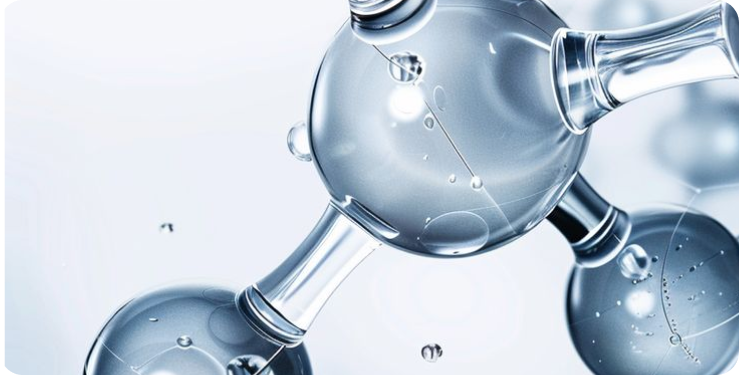
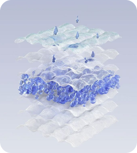
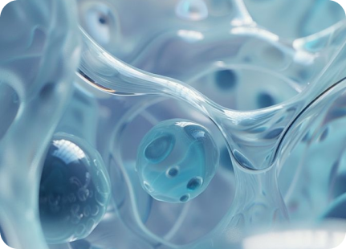
일상적인 행동을 통해 배출된 미세한 플라스틱 입자가 물, 공기, 식품 등 다양한 경로를 통해 인간의 몸에 들어오는 복잡한 순환 과정을 포함합니다."
미세플라스틱의 여정
:당신의 손에서 우리의 몸으로
:당신의 손에서 우리의 몸으로
보이지 않는 플라스틱이 결국 우리 몸으로
들어옵니다. 눈에 보이지 않을 만큼 작은
미세플라스틱은 이미 우리가 마시는 물, 먹는 음식, 그리고 들이쉬는 공기 속에 스며들어 있으며, 우리의 건강을 서서히 위협하고 있습니다. 작은 입자에
불과하지만, 다양한 문제를 유발할 가능성을 높이고 있습니다. 결국 우리가 일상에서 무심코 사용하는
플라스틱이 순환의 고리를 돌아 우리 몸으로 되돌아오며 생태계와 인류의 건강을 동시에 위협합니다.
들어옵니다. 눈에 보이지 않을 만큼 작은
미세플라스틱은 이미 우리가 마시는 물, 먹는 음식, 그리고 들이쉬는 공기 속에 스며들어 있으며, 우리의 건강을 서서히 위협하고 있습니다. 작은 입자에
불과하지만, 다양한 문제를 유발할 가능성을 높이고 있습니다. 결국 우리가 일상에서 무심코 사용하는
플라스틱이 순환의 고리를 돌아 우리 몸으로 되돌아오며 생태계와 인류의 건강을 동시에 위협합니다.

미세플라스틱은
우리에게까지 어떻게
오는가?
우리에게까지 어떻게
오는가?
"미세플라스틱은 플라스틱 제품의 분해나 세탁, 타이어
마모 등을 통해 환경으로 배출된 후 물, 공기, 음식 등을
매개로 우리 몸속으로 들어옵니다. 결국, 우리가 버린
플라스틱이 다시 우리의 건강을 위협하는 순환을 이루는
것입니다. 작아서 잘 느끼지 못하나 위험합니다"
마모 등을 통해 환경으로 배출된 후 물, 공기, 음식 등을
매개로 우리 몸속으로 들어옵니다. 결국, 우리가 버린
플라스틱이 다시 우리의 건강을 위협하는 순환을 이루는
것입니다. 작아서 잘 느끼지 못하나 위험합니다"
- 환경으로 배출
- 생태계로 유입
- 인간에게 전달
플라스틱 제품의 분해, 타이어 마모, 세탁 시 합성섬유의 미세조각 방출, 산업
공정에서의 배출로 미세플라스틱이 물, 공기, 토양으로 유입됩니다.
물속 미세플라스틱은 플랑크톤, 물고기 등 해양 생물에 축적되고, 토양에
스며들어 농작물에 흡수되거나 오염된 물로 재배됩니다. 공기 중 입자는 동물과
인간의 호흡으로 유입됩니다.
스며들어 농작물에 흡수되거나 오염된 물로 재배됩니다. 공기 중 입자는 동물과
인간의 호흡으로 유입됩니다.
해산물, 농작물, 음료수 등 오염된
음식을 섭취하거나, 공기 중 입자를
들이마시면서 미세플라스틱이 체내로
들어옵니다.
음식을 섭취하거나, 공기 중 입자를
들이마시면서 미세플라스틱이 체내로
들어옵니다.
: 이 과정에서 발생한 미세플라스틱 입자는
하수처리시설을 통해 완벽히 걸러지지 못하고
강과 바다로 흘러들거나, 공기 중으로 퍼집니다.
하수처리시설을 통해 완벽히 걸러지지 못하고
강과 바다로 흘러들거나, 공기 중으로 퍼집니다.
: 미세플라스틱은 해양 생물과 육상 동식물에 축적되며 생태계 전반으로
확산됩니다.
: 미세플라스틱은 음식, 물, 공기 등 다양한
경로를 통해 인간의 몸속으로 들어와 점차적으로 축적되며, 건강에 잠재적 위협을 가하게 됩니다.
경로를 통해 인간의 몸속으로 들어와 점차적으로 축적되며, 건강에 잠재적 위협을 가하게 됩니다.
"먹고, 마시고, 숨쉬는 모든 순간, 당신은 미세플라스틱과 함께하고
있습니다."

01
02
03
04
05
환경 오염
: 미세플라스틱은 자연에서 분해되지 않아 대기, 물, 토양 등에 쌓입니다.
특히 바다에서
미세플라스틱은 해양 생물들이 섭취하게 되며, 이는 먹이사슬을 통해 생태계 전체에 영향을 미칠 수
있습니다.
미세플라스틱은 해양 생물들이 섭취하게 되며, 이는 먹이사슬을 통해 생태계 전체에 영향을 미칠 수
있습니다.
생물의 건강에 미치는 영향 :
미세플라스틱이 동물이나 인간의 체내로
유입되면, 장기적인 건강 문제를 일으킬 수 있습니다. 미세플라스틱
입자는 호흡기나 소화기를 통해 체내로 들어가며, 내분비계 교란,
염증 반응, 그리고 일부 연구에서는 암과 같은 질병의 위험 증가와
관련이 있을 수 있다고 제기되고 있습니다.
유입되면, 장기적인 건강 문제를 일으킬 수 있습니다. 미세플라스틱
입자는 호흡기나 소화기를 통해 체내로 들어가며, 내분비계 교란,
염증 반응, 그리고 일부 연구에서는 암과 같은 질병의 위험 증가와
관련이 있을 수 있다고 제기되고 있습니다.
인체에 미치는 영향
: 미세플라스틱이 음식물이나 물을 통해 인간의
체내로 유입될 수 있으며, 일부 연구는 미세플라스틱 입자가
장기적으로 건강에 영향을 줄 수 있다고 경고하고 있습니다.
또한, 미세플라스틱은 화학 물질을 흡착할 수 있어,
이 화학 물질이 생물에 유해할 수 있습니다.
체내로 유입될 수 있으며, 일부 연구는 미세플라스틱 입자가
장기적으로 건강에 영향을 줄 수 있다고 경고하고 있습니다.
또한, 미세플라스틱은 화학 물질을 흡착할 수 있어,
이 화학 물질이 생물에 유해할 수 있습니다.
화학 물질의 유해성
: 미세플라스틱은 다양한 화학 물질과 결합할 수
있습니다. 예를 들어, 농약, 중금속, 혹은 환경 호르몬 등 유해한 화학 물질이
미세플라스틱에 결합되어 환경과 생물체에 추가적인 위험을
초래할 수 있습니다.
있습니다. 예를 들어, 농약, 중금속, 혹은 환경 호르몬 등 유해한 화학 물질이
미세플라스틱에 결합되어 환경과 생물체에 추가적인 위험을
초래할 수 있습니다.
경제적 손실
: 미세플라스틱은 생태계와 인간 건강에 해를 끼치며, 내분비계 교란, 염증,
화학물질 흡착 등의 위험을 초래합니다. 또한, 어업 및 정수 비용 증가 등
경제적 손실을 유발해 사회적 부담을 가중시킵니다.
미세플라스틱의 위험성
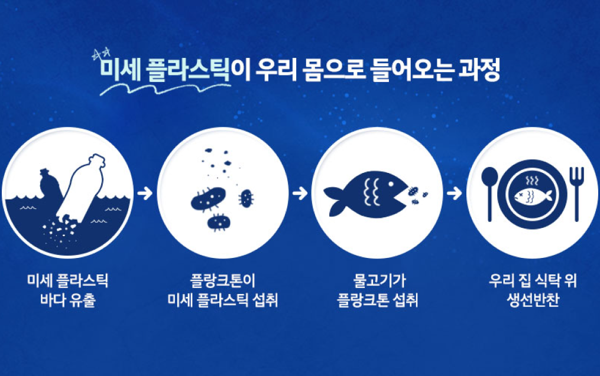

 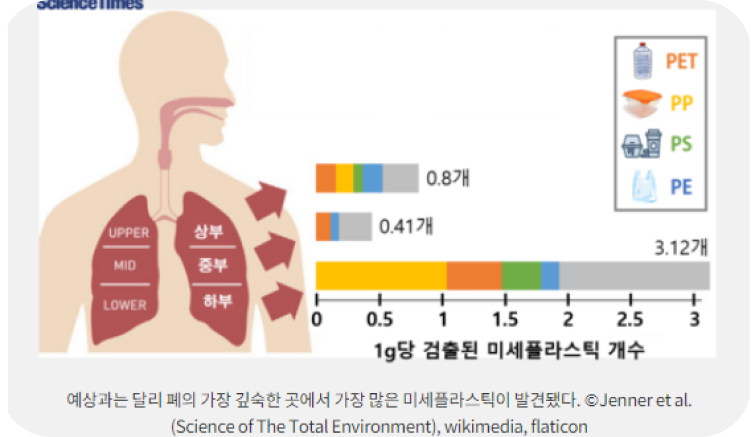
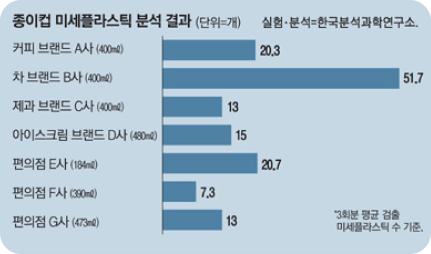
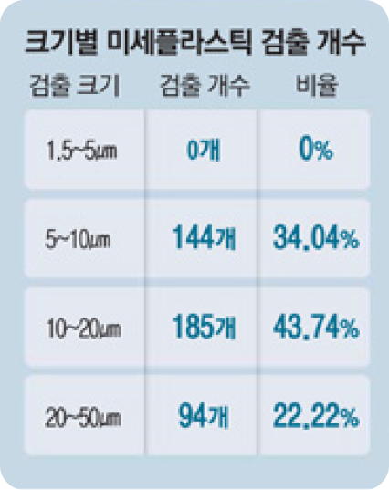
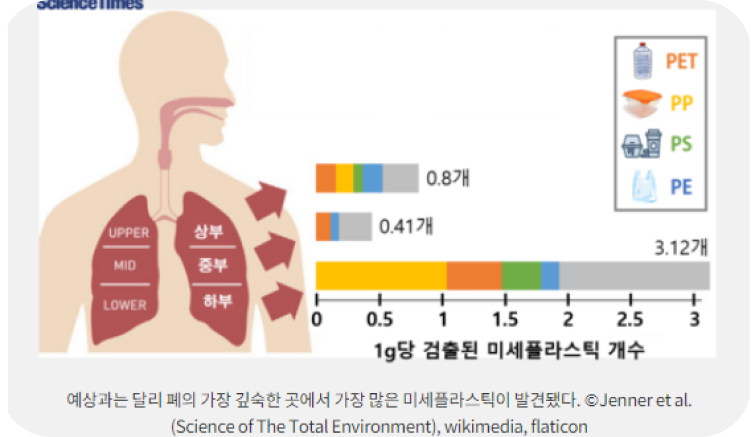
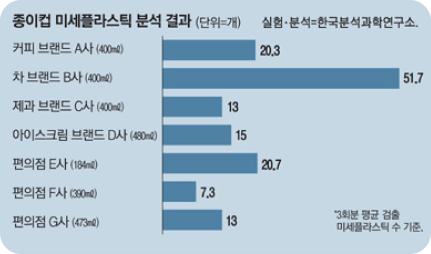
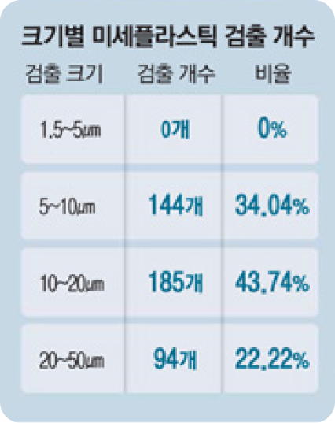
"우리의 물, 공기, 음식까지… 미세플라스틱은 이미 여기 있습니다."
미세플라스틱은 눈에 보이지 않을 정도로 작지만, 이미 우리의 물, 음식, 공기
속에 스며들어 있습니다. 알지 못하는 사이 체내로 흡수되어 건강을 위협하고,
환경과 생태계를 서서히 파괴합니다.
작지만 광범위한 영향력을 가진, 우리 삶 깊숙이 자리한 보이지 않는 위협입니다.
지금 우리가 행동하지 않는다면, 미세플라스틱은 미래 세대에게 더 큰 위험과 부담을 남길 것입니다.
깨끗한 환경과 건강한 미래를 위해, 미세플라스틱 문제에 대한 관심과 실천이 필요합니다.
플라스틱 사용을 줄이고, 올바른 분리배출과 재활용을 실천하는 작은 노력부터 시작해야 합니다.
우리의 선택이 환경을 바꾸고, 생태계를 지키는 첫걸음이 됩니다.
지금 행동하지 않으면, 미래는 점점 더 미세해질 뿐입니다.
작지만 광범위한 영향력을 가진, 우리 삶 깊숙이 자리한 보이지 않는 위협입니다.
지금 우리가 행동하지 않는다면, 미세플라스틱은 미래 세대에게 더 큰 위험과 부담을 남길 것입니다.
깨끗한 환경과 건강한 미래를 위해, 미세플라스틱 문제에 대한 관심과 실천이 필요합니다.
플라스틱 사용을 줄이고, 올바른 분리배출과 재활용을 실천하는 작은 노력부터 시작해야 합니다.
우리의 선택이 환경을 바꾸고, 생태계를 지키는 첫걸음이 됩니다.
지금 행동하지 않으면, 미래는 점점 더 미세해질 뿐입니다.
미세플라스틱, 작다고 무시하기에는 너무 큰 문제입니다.
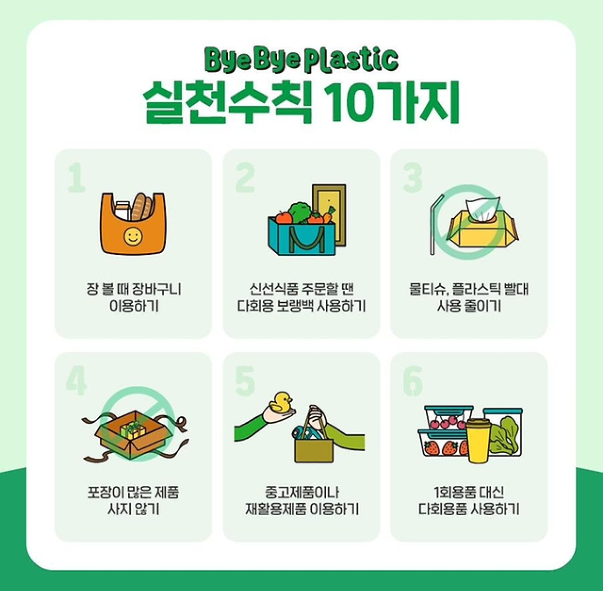
미세플라스틱을 줄이기 위한 생활 속 실천습관